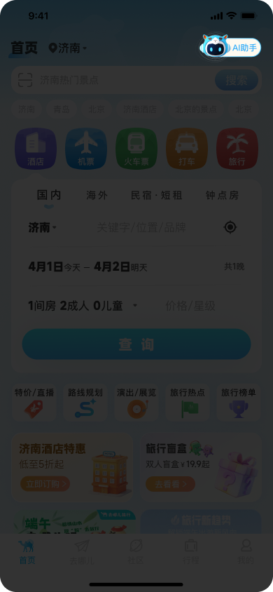

流程 A · 对话发起
以下为共用的主流程

试试：点击手机中高亮的「AI助手」。
流程 A · 对话发起 · 第 1 / 8 步
点击 AI 助手入口
首页右上角，常驻可见
- 用户
- 在首页浏览时，点击右上角「AI助手」气泡。
- AI（小骆）
- 入口常驻首页右上角，任何浏览状态都可直达 AI 能力。
- 界面结果
- 直接进入 AI 对话页——不经表单，小骆待命。
首页入口：直达对话，随想随问。
流程 A · 对话发起

试试：点击手机中高亮的「AI助手」。
流程 A · 对话发起 · 第 1 / 8 步
首页右上角，常驻可见
首页入口：直达对话，随想随问。